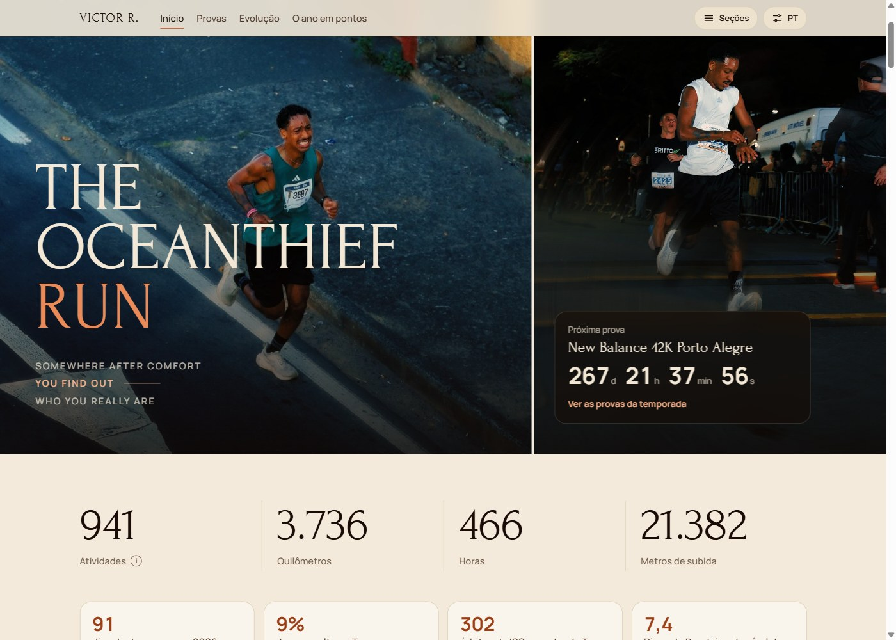
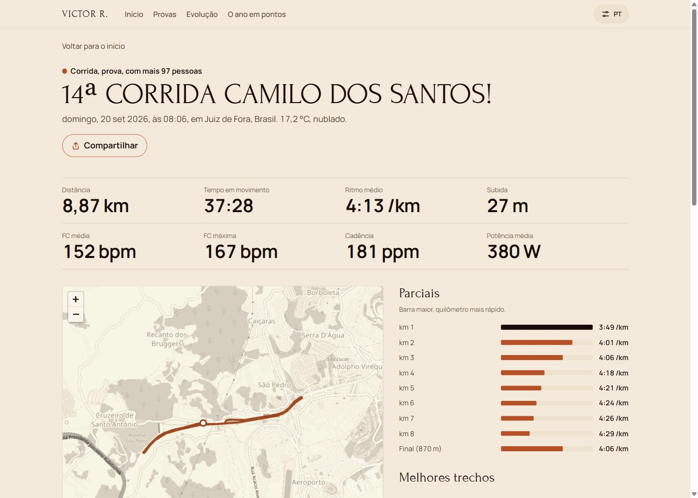
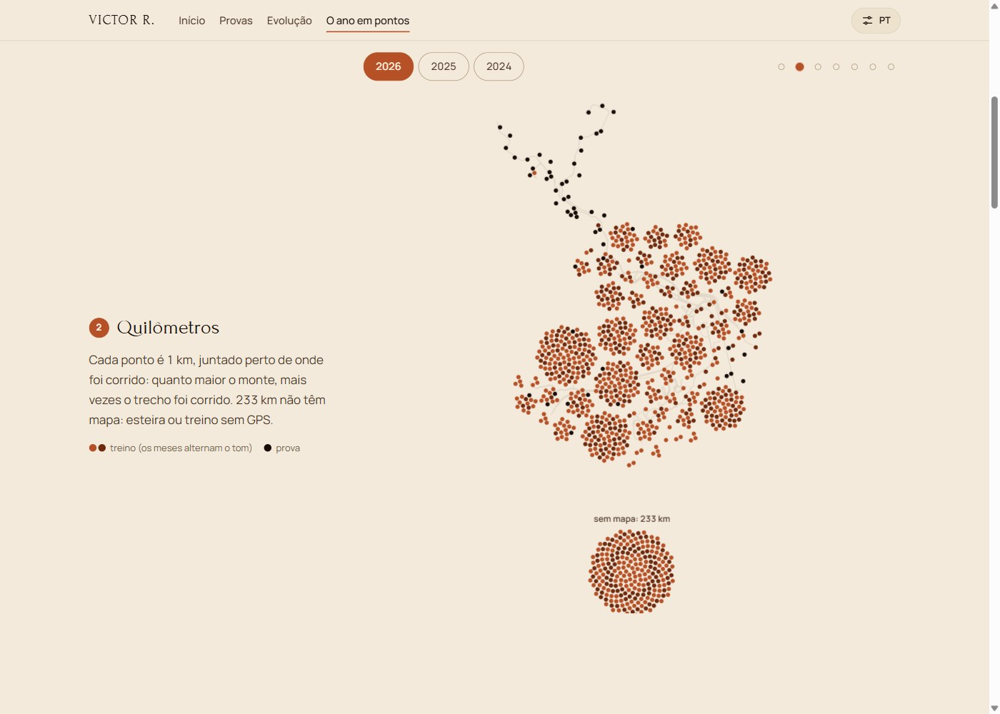
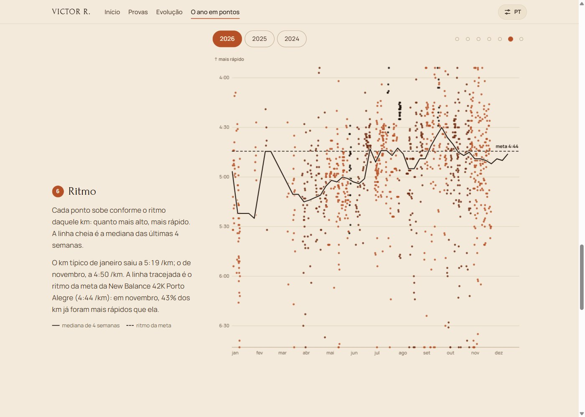
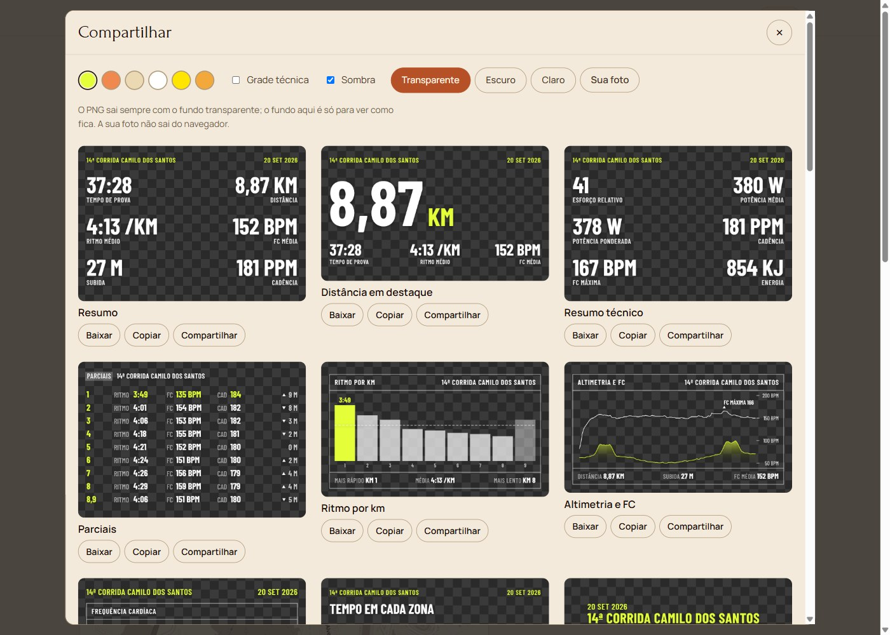
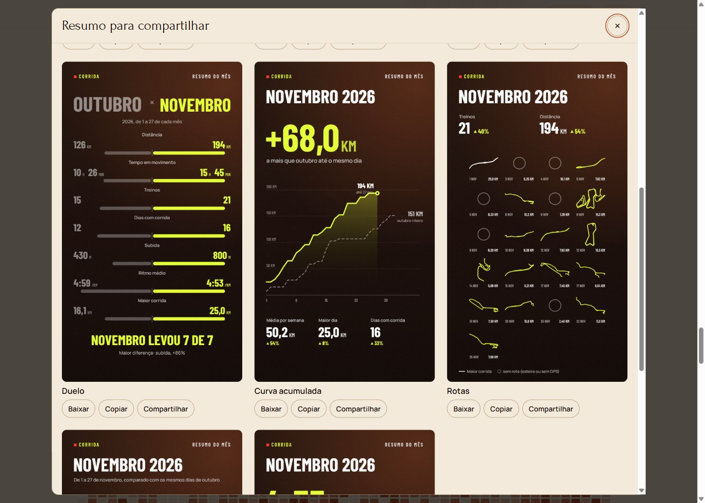

Projeto 03 — Estudo de caso
The Oceanthief Run
Meu site de corrida, alimentado pelos meus próprios dados do Strava. Cada treino que eu registro aparece no site cerca de um minuto depois, sem que eu encoste em nada — e sem servidor, sem banco de dados e sem etapa de build.
No ar · atualiza a cada treino
Atividades sincronizadas Desde abr/2024 · todos os esportes
Distância somada Corrida, caminhada e o resto
Último treino registrado Vindo do relógio, via Strava
Atualização dos dados Sem ninguém rodar nada
Números de 27/11/2026.
01 — A ideia
Um site pessoal que também é um produto de dados
O Strava guarda tudo, mas mostra pouco do que importa para quem treina para uma prova: como os recordes evoluíram, quais provas já corri e em quanto tempo, se o volume está onde deveria estar a meses da maratona. Eu queria um lugar meu para isso, no espírito dos sites pessoais de corredores — o therealroach.co foi a referência.
A restrição que definiu o projeto: ele tinha que se manter sozinho. Um site de treinos que depende de eu lembrar de rodar um script vira um site desatualizado em duas semanas. Então o trabalho de verdade não foi a página — foi o encanamento que leva o dado do relógio até ela, sem custo e sem servidor para administrar.
02 — O produto
Do resumo da carreira ao quilômetro a quilômetro
Início, Provas, Evolução, O ano em pontos, a página de cada treino e o plano da maratona — em português, inglês e espanhol, com tema claro e escuro e km ou milhas.





O que o Strava não calcula ficou a cargo do site. A previsão de tempo pela fórmula de Riegel, a partir das melhores marcas dos últimos 12 meses, comparada com a meta da maratona — com o aviso, na própria página, de que para a maratona ela costuma ser otimista. O ritmo contra a frequência cardíaca em dois períodos, para ver se o mesmo esforço ficou mais rápido. E o arquivo de provas, que agrupa as edições de uma mesma corrida: o Strava não tem identificador de prova, então o agrupamento combina nome parecido, mesma época do ano e distância parecida.
03 — Contar o ano
Cada quilômetro, um ponto
Uma página que conta o ano com a rolagem: os mesmos pontos, um por quilômetro corrido, mudam de lugar em sete capítulos.


A ideia veio de uma visualização de eleição, Land doesn't vote, people do, de Karim Douieb, e das versões animadas de David Zumbach e Caio Yamamoto Lellis. Um mapa de rotas tem o mesmo defeito de um mapa eleitoral pintado por área: o trecho que corri dezenas de vezes aparece com o mesmo traço de um trecho feito uma vez só. Trocando a linha por um ponto por quilômetro, a repetição vira volume.
- Rotas — todas as corridas do ano, uma por cima da outra.
- Quilômetros — cada km vira um ponto, num monte perto de onde foi corrido. Esteira e treino sem GPS formam um monte à parte.
- Meta — em ordem de data, os pontos enchem a meta do ano; no ano corrente, anéis mostram onde ele fecha no ritmo das últimas 8 semanas.
- Semanas — uma coluna por semana: semanas sem corrida, a maior sequência, a média e a comparação com o ano anterior.
- Horários — uma coluna por hora de saída, e o dia que mais rende.
- Ritmo — cada ponto na altura do ritmo daquele km, com a mediana de 4 semanas e o ritmo da meta da maratona.
- Previsão — só no ano corrente: linhas de 42 pontos, cada uma no ritmo de uma previsão de Riegel, numa corrida contra a meta.
Os pontos saem do mesmo pipeline
O sincronizador passou a gerar um arquivo com um ponto por quilômetro inteiro de cada ano, posto sobre a rota e com o ritmo daquele km (a parcial do Strava). Antes de publicar, conferi que a contagem de pontos batia com os quilômetros inteiros de 2024, 2025 e 2026. A previsão de Riegel saiu da página Evolução para um arquivo só, usado pelas duas páginas: a mesma conta, o mesmo número, nos dois lugares.
Canvas, e uma saída para quem não vê a animação
São cerca de 1.300 pontos por ano, desenhados num canvas que fica
parado enquanto os capítulos passam ao lado (no celular, por baixo). Com "reduzir
movimento" ligado no sistema, cada capítulo aparece pronto, sem animação. E os
números de cada mês também saem numa tabela, para quem não vê o desenho.
A mesma história, em vídeo
Para o LinkedIn e o Instagram, a animação também sai como MP4 — em 4:5, 9:16 ou quadrado, nos três idiomas. Um script em Node grava quadro a quadro no Chrome sem janela: o relógio da página só anda quando o script pede, então cada quadro sai igual, seja qual for a velocidade do computador, e o ffmpeg junta tudo no fim. O script só usa o que já vem com o Node.
04 — Do site para o story
Cada treino vira uma figura
Um botão em cada treino e outro na seção de constância transformam os números em imagens prontas para pôr por cima de uma foto.


Na página de cada corrida e caminhada, o botão Compartilhar desenha 23 figuras de 1080 px de largura e fundo transparente, inspiradas nas artes da Coros: resumo, parciais, ritmo por km, altimetria e FC, zonas, rota com marcos, melhores esforços, a comparação com a edição anterior da prova, splits no estilo das placas de transmissão de atletismo e outras. Cada figura só aparece quando o treino tem o dado de que ela precisa. Dá para baixar, copiar (no iPhone, é só colar no story) ou abrir a folha de compartilhar do celular. A foto escolhida para a prévia não sai do navegador.
Na página inicial, Compartilhar resumo monta oito modelos do mês ou do ano no tamanho do story (1080 × 1920), calculados na hora com os treinos que já estão no site. As comparações seguem uma regra só: o mês contra o anterior, o ano contra o anterior, e um período que ainda não acabou contra os mesmos dias do outro — 1 a 27 de novembro contra 1 a 27 de outubro. Nada de projeção: a imagem mostra só o que aconteceu.
Rótulos que não encostam na rota
Nas figuras com mapa, rótulos como "km 4" ou "largada e chegada" não podem cobrir o desenho. Escrevi um posicionador para isso: ele amostra a linha da rota a cada 6 px, mede a largura de cada rótulo e testa oito direções em distâncias crescentes, ficando com o lugar mais perto que não encosta na rota, em outro rótulo nem em outro ponto. Rótulo que acaba longe ganha uma linha fina até o seu ponto. Conferi em ida e volta, em voltas num campus, numa meia maratona e num longão de 30 km.
Aprovar antes de publicar
Figura ou modelo novo entra no ar escondido: só aparece com
?figuras=novas ou ?resumos=novos no endereço. Assim dá para
ver a novidade no site de verdade, com dados de verdade, antes de liberar para todo
mundo. Nove das figuras atuais passaram por esse caminho; duas propostas não foram
aprovadas e saíram do código sem nunca terem sido liberadas.
05 — Automação
Do relógio ao site em cerca de um minuto
01
Strava
treino criado,
editado ou apagado
02
Cloudflare Worker
confere o aviso
responde em < 2 s
03
GitHub Actions
sync em Python
incremental
04
Repositório
JSON versionado
no git
05
GitHub Pages
site estático
sem servidor
Dois gatilhos: o aviso e o relógio
Quando uma atividade é criada, editada ou apagada, o Strava manda um aviso (webhook) para um Cloudflare Worker de umas 60 linhas. O Worker confere se o aviso é do atleta certo, responde na hora — o Strava desiste se a resposta passar de 2 segundos — e só depois pede ao GitHub para rodar a atualização. Nas rodadas disparadas por treino, o caminho inteiro — baixar, gerar, versionar e publicar — levou de 39 a 76 segundos.
Avisos podem se perder. Por isso a mesma automação roda também em três horários fixos por dia, como rede de segurança. Como a sincronização é incremental, rodar duas vezes não estraga nada: a segunda rodada só não encontra novidade. E uma fila garante que duas rodadas nunca escrevam ao mesmo tempo.
on:
repository_dispatch: # o aviso do Strava, via Cloudflare Worker
types: [strava]
schedule: # rede de segurança: 6h, 13h e 21h (Brasília)
- cron: "0 0,9,16 * * *"
push: # mudança no código publica na hora
branches: [main]
concurrency:
group: atualizar-site # uma rodada por vez, nenhuma cancelada
cancel-in-progress: falseOs dados moram no git
Não existe banco de dados. O script em Python gera arquivos JSON — um resumo de todas as atividades, as rotas, as séries mensais, os pontos de cada ano e um arquivo por treino — e faz commit deles no repositório. O site só lê esses arquivos. O resultado: cada atualização fica no histórico, dá para ver exatamente o que mudou em cada rodada, e o site inteiro é estático, hospedado de graça e sem nada para administrar.
Cache do navegador sem etapa de build
O GitHub Pages manda o navegador guardar CSS e JavaScript por 10 minutos: uma
correção publicada podia levar esse tempo para aparecer para quem já tinha
visitado o site. Sem bundler para resolver isso, a própria automação, ao montar a
pasta publicada, acrescenta a cada arquivo uma etiqueta com o hash do código
(site.css?v=…) — inclusive nos módulos que só carregam quando alguém abre
a janela de compartilhar. Mudou o código, muda a etiqueta, e o navegador busca a
versão nova. O código no repositório continua sem etiqueta nenhuma.
06 — Engenharia de dados
Um pipeline que respeita os limites da fonte
1. Sincronização incremental sob limite de requisições
A API do Strava libera 100 pedidos a cada 15 minutos. A lista de atividades sai barata, mas o detalhe de cada treino (parciais, melhores trechos, equipamento) e as séries ao longo do percurso (altimetria, ritmo, frequência cardíaca) custam um pedido cada. A primeira carga levou horas, com o script esperando sozinho entre os lotes. Desde então, cada rodada tem um orçamento — até 90 detalhes e 90 séries, os treinos mais novos primeiro — e tudo o que já foi baixado fica em cache, inclusive o clima de cada treino (Open-Meteo) e a cidade (Nominatim). Cada série é pedida uma única vez.
2. Dado novo sem pedido a mais
As figuras pediam dados que o site não guardava: esforço relativo, potência, energia, temperatura, cadência ao longo do treino. Antes de gastar orçamento, olhei o que já chegava. A lista de atividades trazia quase tudo, sem nenhuma chamada extra; as séries passaram a guardar também tempo, cadência e potência, na mesma chamada de sempre. Só as séries antigas dos treinos feitos com relógio precisam ser baixadas de novo, e isso acontece aos poucos, dentro do orçamento de cada rodada.
3. Só a biblioteca padrão do Python
O sincronizador tem quase mil linhas e nenhuma dependência: HTTP, OAuth, JSON e as
contas de geometria saem da biblioteca padrão. Na prática, a automação não tem
pip install para quebrar nem versão de pacote para envelhecer.
4. Números que fecham
Um detalhe que só aparece com uso real: o resumo da semana mostrava "2 km" para uma caminhada de 1,55 km. Arredondar parece inofensivo até alguém comparar com o próprio Strava. Virou regra escrita: treino sozinho sempre com duas casas, como no Strava; somas com menos casas conforme o número cresce. No mesmo pacote, as parciais passaram a usar o tempo (em movimento ou total) cuja soma bate com o do treino, e a cadência de caminhada passou a contar as duas pernas.
07 — Privacidade
Quanto esconder é configuração, não código
Um site público com as rotas de alguém é, sem cuidado, um mapa até a porta de casa. Construí a proteção, medi o que ela custava e deixei a decisão num arquivo de configuração.
A primeira versão fazia o que muita gente faz: cortava 400 metros do começo e do fim de cada rota. Antes de considerar isso resolvido, auditei o resultado contra os dados publicados.
Corte fixo de 400 m
~54%
das pontas de rota publicadas caíam num mesmo quadrado de uns 400 m. O corte escondia o ponto exato, mas o conjunto desenhava um alvo.
Zona de privacidade automática
1 km
de raio em volta do lugar de onde mais saem treinos, encontrado pelo próprio script, com o centro deslocado do lugar real numa direção secreta, e pontas cortadas entre 400 e 600 m, num valor diferente para cada treino.
O preço de esconder
A proteção funcionava, mas tinha um custo que só apareceu nos números: com a zona e os cortes ligados, 277 rotas chegavam ao mapa. Em 24/11/2026 decidi publicar as rotas inteiras, como vêm do Strava — hoje são 680. O mecanismo não saiu do código: corte, variação, raio, número de zonas automáticas e lugares extras são campos de um arquivo de configuração, e um comando refaz todos os arquivos a partir do cache, sem falar com o Strava. Quando uma rota sai cortada, a página do treino avisa.
Permissão mínima
O site pede ao Strava só activity:read, nunca
read_all. Treinos marcados como "Só eu" e os trechos dentro das
zonas de privacidade criadas no próprio Strava nem chegam ao
pipeline — não existe o que vazar.
Uma decisão, não uma reescrita
Voltar a esconder é mudar a configuração e rodar o sincronizador em modo offline. A auditoria e o mecanismo continuam valendo para quem quiser usar o projeto com outra escolha.
Segredos fora do código
As chaves do Strava e o token do GitHub vivem como segredos do Actions e do Worker — o token, restrito a um único repositório e só com permissão de escrever conteúdo.
Precisão só onde ela serve
A lista de cidades e os pontos do mapa geral usam coordenadas arredondadas. O que serve para dizer "treinei em Juiz de Fora" não precisa servir para dizer em que rua.
08 — Interface
Feito à mão, em três idiomas
- HTML, CSS e JavaScript puros, em módulos ES, sem npm e sem build. Os gráficos de barras, linhas e degraus são SVG próprio; a história do ano e as figuras de compartilhar são desenhadas em canvas; os mapas usam Leaflet com o OpenStreetMap; os globos da abertura, d3-geo.
-
Três idiomas com um verificador. Todo texto da interface passa
por uma função de tradução que usa a frase em português como chave. Um script
aponta qualquer frase sem versão em inglês ou espanhol, ou um marcador como
{n}que sumiu numa delas. - Cores validadas, não escolhidas no olho. As cores dos esportes, das fases do plano e dos pontos da história passaram por um validador de contraste e de distinção entre si, nos dois temas. Laranja contra vermelho, por exemplo, reprovou — as provas ganharam outra cor.
- Tipografia testada com o conteúdo real. A primeira fonte desenhava o "ª" como um "a" comum — e corridas como a "14ª Corrida Camilo dos Santos" são justamente o conteúdo do site. Troquei de fonte.
- Layout medido, e olhado. Controlando o Chrome pelo protocolo de depuração, as mudanças de layout são medidas de 360 a 1920 px: rolagem horizontal, palavras partidas, altura de linha. E conferidas em print, porque medir texto não mostra uma legenda quebrando letra por letra.
09 — Em produção
A primeira semana no ar, e a correção
Medido no histórico do GitHub Actions, de 16/11 a 27/11/2026.
| Item | 1ª semana (16 a 24/11) | Depois da correção (24 a 27/11) |
|---|---|---|
| Rodadas da automação | 52 | 23 |
| Disparadas por um treino (aviso do Strava) | 18 | 4 |
| Duração de uma rodada disparada por treino | 39 a 75 s | 50 a 76 s |
| Rodadas concluídas | 48 / 52 | 23 / 23 |
| Atividades com detalhe completo | 810 / 937 | 814 / 941 |
As quatro falhas da primeira semana ensinaram algo. Três foram o GitHub Pages recusando a publicação logo depois de receber o pacote do site — um problema intermitente do lado do GitHub. A automação agora espera 20 segundos e tenta de novo.
A quarta foi uma corrida entre duas rodadas. O Strava mandou dois avisos com 8
segundos de diferença; a segunda rodada esperou na fila, começou do commit em que
tinha sido disparada — sem os dados que a primeira acabara de guardar — e o envio
dela foi recusado. O mesmo aconteceria com um commit de código chegando no meio de
uma rodada. Nada se perdeu, mas a correção entrou no dia seguinte: a rodada sempre
começa da ponta da main e, se a main mudar no caminho, traz o
que chegou e tenta de novo. Testei numa cópia local, com código chegando no meio da
rodada e duas rodadas mexendo no mesmo arquivo. Nos três dias seguintes, com 13
publicações de código no período, foram 23 rodadas e nenhuma falha.
# a main mudou durante a rodada? traz o que chegou e tenta de novo
for tentativa in 1 2 3 4 5; do
if git push; then
exit 0
fi
sleep $((tentativa * 3))
# no rebase, "theirs" é o commit do robô: em conflito, valem os dados novos
git pull --rebase -X theirs origin main
done
exit 110 — Limitações
O que os dados não sustentam
Frequência cardíaca e cadência só desde maio de 2026
Foi quando passei a correr com um relógio com sensor. Antes disso não há o que mostrar, então comparações de esforço só valem a partir dessa data — dois anos de corrida ficam de fora delas, e das figuras que dependem desses dados.
79 corridas antigas não têm detalhe
Foram lançadas à mão no Strava, sem GPS nem parciais. Entram nos totais, mas não nos recordes por trecho nem no mapa.
Às vezes o Strava discorda de si mesmo
Em 27 caminhadas com paradas, nem o tempo em movimento nem o tempo total fecham com a soma das parciais. A conta certa só sai das séries completas do percurso, que ainda não foram baixadas para todos os treinos.
A Riegel é referência, não promessa
A previsão para a maratona extrapola marcas de distâncias menores e costuma ser otimista. A página mostra a conta, a fonte de cada tempo usado e esse aviso, lado a lado.
11 — Stack
Ferramentas
Dados
- Python
- API do Strava (OAuth 2)
- Open-Meteo
- Nominatim
- JSON versionado
Automação
- GitHub Actions
- Cloudflare Workers
- Webhooks
- GitHub Pages
- Node e ffmpeg (vídeo)
Interface
- JavaScript
- CSS
- SVG
- Canvas
- Leaflet
- d3-geo
Qualidade
- Auditoria de privacidade
- Verificador de traduções
- Testes de layout via CDP
- Novidades escondidas até a aprovação